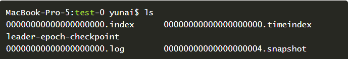
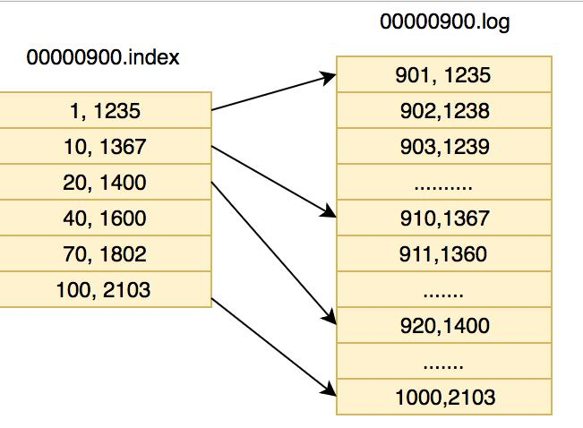

消息队列
消息队列的使用场景:
- 应用解耦
- 异步处理
- 流量削峰
- 消息通讯
- 日志处理
重点应该是前两个.至于这些东西具体怎么应用,我觉得要等到我工作中遇到这些场景.
使用消息队列有什么缺点
很明显的,系统可用性降低,因为凭空多了一个服务,我们需要保证消息队列的高可用.
其次应该是系统更加复杂了,所以所我们学习可能弄的越复杂越好,但实际做起来,如果不需要,就不要给自己添加麻烦.
一致性也是一个问题,就好像缓存和数据库的一致性问题,这个时候我们就需要提供分布式的事务来管理.
kafka
kafka高吞吐量如何实现?
这个问题在我面试网易的时候被问了两次,当时回答的不好,现在总结一下:
- 顺序IO
kafka可以保证单个partition的写入顺序性,而且kafka并没有提供删除和更新的操作,所以kafka会使用顺序读写磁盘中存储的文件,我们知道,顺序读写的速度比随机读写的速度可快一个数量级.但是磁盘就是磁盘,始终比不过内存,kafka为什么不用内存来保存呢,问题就是kafka是为海量数据而生的,不论是流式计算中的数据源,还是服务间的消息传递,都不是内存可以承担的,还有一点就是,我们知道kafka是用scala,java开发的,是运行在JVM上的,这就离不开GC了,如果存储在内存中,频繁的GC也不是一个高吞吐量的消息队列应该有的. - 零拷贝
linux的zero-copy大家都知道,熟悉的就是mmap(内存映射文件),kafka就使用了这个.
还是重新说一下零拷贝,正常情况下,客户端从服务器读取数据是这样的过程:
- 操作系统将数据从磁盘读到内核空间的读缓存
- 应用程序从内核读缓存中将数据拷贝到用户空间的缓存区
- 应用程序将数据从用户空间的缓冲区再写回到内核空间的socket缓冲区
- 操作系统将socket缓冲区的数据拷贝到NIC缓冲区中,然后通过网络发送给客户端
使用了零拷贝就不用经过用户空间了,直接将内核空间的度缓冲区直接拷贝到内核空间的socket缓冲区,再到NIC缓冲区.
- 分区
我们知道kafka将数据以topic在逻辑层面划分,而在物理层面,每个topic会被划分为多个partition,每个partition对应一个逻辑log,由多个segment文件组成.
partition存放在不同的broker,当生产者发布消息的时候,可以做一个负载均衡,然后分布到不同的partition,同样的,消费者拉取消息的时候,也可以做一个负载均衡,使从不同的broker中拉取,这样大大提升了吞吐量. - 数据批量发送
顾名思义 - 消息压缩
provider 可以将消息压缩发送给broker - 利用page cache
文件系统缓存，不直接写磁盘，
kafka的高可靠如何实现?
这个问题同样被问到过,和上面那个问题一样,都是基础问题,分几个角度吧
- zk
我们知道zk负责整个集群的信息注册和协调,所以保证zk的高可用也是kafka的一部分,这里zk也采用集群,节点数一般为2N+1,有自己的leader选举算法,之后再说 - broker集群
- 上面我们说到每个topic会有多个partition分区,那么partition的可靠性也就是整个topic的可靠性,这里kafka使用副本机制来保证,每个partition在broker集群中复制,形成
replica副本,而每个replica副本会有一个leader分区,当leader挂了,会通过ISR(In-Sync Replica 同步副本队列)列表选举出一个leader.下面详细说一下ISR: - 副本并不是越多越好,虽然保证了可靠性,但是性能就下去了,在kafka中,replica默认是1,也就是没有副本,就一个leader,但是这个值可以设置. 所有的副本被称为
Assigned Replicas,也就是AR,ISR时AR中的一个子集,由leader维护ISR列表,follower(除leader的replica)从leader同步数据有一点延迟,超过阀值的follower就会被踢出ISR,加入OSR(outOf-Sync Replica)列表,新加入的follower也会先存放在OSR中,我们就得到了AR = ISR + OSR - 接着说,现在我们有两个列表,再介绍一个概念,
HW(HighWatermark),俗称高水位,取一个partition对应的ISR中最小的LEO(LogEndOffset,每一个partition的消费偏移量)最为HW,consumer只能消费到HW的位置,没次leader写入新的消息,consumer并不能直接消费,而是等待所有ISR中的replica同步后更新HW,这条消息才能被消费. - 这样,我们就有了ISR这样一个保证同步的列表,然后就是选举算法: kafka选举算法类似PacificA算法,上面我们知道,只有ISR中的follower才可能称为leader,当ISR中至少有一个follower时,就可以了确保已经commit的消息没有丢失.
- 具体的选举算法是依托于zk的,通过在zk上创建一个controller节点来实现leader选举,并在该节点中写入当前broker信息就完成了选举,根据zk的强一致性,一个节点只能被一个客户端创建成功,创建成功就代表该broker称为leader,也就是先到先得.
- 对于所有replica都不可用的情况，一般会等待一个replica醒过来，一种是等待isr中的一个，另一种是等待任意一个replica醒过来。可以通过参数设置，默认是第二种
- 上面我们说到每个topic会有多个partition分区,那么partition的可靠性也就是整个topic的可靠性,这里kafka使用副本机制来保证,每个partition在broker集群中复制,形成
- kafka producer
producer从zk中拉取到topic元数据（/brokers/…/state）后,选择对应topic的leader分区,进行消息发送写入,而Broker根据request.required.acks配置,选择是否同步,同步多少replica才完成响应.
kafka数据存储模型
之前我们说过kafka数据是保存在磁盘的额,而且是顺序IO,那我们就看一下这个文件是什么.
每个partition都会对应一个日志目录,在目录下面会对应多个日志分段,大概是这样子:

其中Topic名字是Test,Partition是0,所以文件目录是Test-0;LogSegment由两部分组成,分别是.index和.log文件,分别表示segment索引文件和数据文件,这两个文件的命令规则为partition全局第一个segemnt从0开始,后续每个segment文件名为上一个segemnt文件最后一条消息的offse值,假设有1000条消息,每个Logsegment大小为100,那内部就是这样的:

索引文件存储元数据,类似1,0 3,200 意思是在数据文件中第一个message的在数据文件中的偏移量是0,第三个message的偏移量是200.
如果是在partition中查找message,先假设每个segemnt的大小为100,然后900-1000的index和log如下:
我们全局寻找第911条数据,先定位是那一段,找到00000000…900.index|log文件,然后再其内部寻找(911-900)11索引,找到了[10,1367],然后再log文件中,从1367的偏移量开始顺序找,就可以了找到911的文件了.图有点问题
####
后
内容是从网上搜罗而来